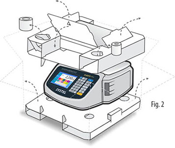
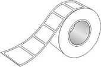

Remove the stainless steel platter together with the label roll and continuous paper (Figure 1).
If the model you have acquired includes a screen pole (raised display), you must put the pole in a vertical position (in its respective place in the main cabinet), without taking it out of the box.
Remove the upper carton protection completely.
Gently lift the whole equipment until it is out of the box. Do not lift it from the metal platter support.
In the case you need to move the equipment, correctly put it in the packaging for greater safety.

Packaging content
CUORA NEO Scale
Batteries: 2 x 12V 2,3Ah.
Laid in the lower cabinet, intended for said purpose.
They will not be connected at the time of the purchase.
Power supply cable.
Complementary stainless steel platter.
Self-adhesive label roll.
Continuous paper roll.
User’s manual and/or quick guide.
ATAS list (Authorized Technical Agents SYSTEL).
Continuous paper Self-adhesive labelRecepient platterSource cable connected to the power source